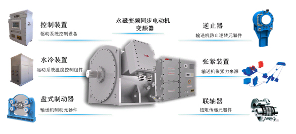
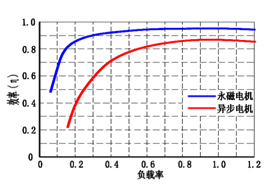
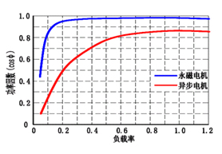

系统方案
SYSTEM SOLUTIONS
一、产品名称
带式输送机用PVD智能驱动与控制系统
二、概述
带式输送机用PVD智能驱动与控制系统是精基科技有限公司针对散状物料运输系统的驱动及智能化控制提供的一揽子解决方案。PVD智能驱动与控制系统由永磁直驱、变频及智能控制三大核心技术组成。主要核心部件包括永磁变频同步电动机、变频器、智能控制装置。外围辅助设备包括水冷装置、逆止器、联轴器、盘式制动器以及张紧装置等。
带式输送机用PVD智能驱动与控制系统以带式输送机机械特性及运输系统运行工况为研究目标，综合解决系统的动力来源、可控运行、智能控制等问题。实现复杂工况下输送系统的安全可靠稳定运行。
三、应用范围
带式输送机用PVD智能驱动与控制系统以散状物料运输系统为应用目标。广泛应用于矿山、煤炭、港口、冶金、化工、建材、电力、粮食及交通运输等领域。
主要技术特点
1.PVD智能驱动与控制系统组成
广义PVD智能驱动与控制系统主要由永磁变频同步电动机、PVD系统专用变频器、PVD系统专用冷却装置、PVD系统专用控制箱、盘式制动器、张紧装置、逆止器、蛇形弹簧联轴器等构成。狭义PVD智能驱动与控制系统可以仅含永磁变频同步电动机、PVD系统专用变频器、PVD系统专用冷却装置、PVD系统专用控制箱。

PVD系统构成图
2. PVD系统特点
1) 高效率、高功率因数
无减速装置，机械效率接近100%。永磁变频同步电动机及变频器功率因数均高于0.96。
2) 高效区广
带式输送机用PVD智能驱动与控制系统在20%~120%额定负载范围内均有很高效率。在低负载、低速条件下，与异步电动机驱动系统相比更具优势。

3) 更安全可靠
1PVD智能驱动与控制系统采用永磁直驱技术，驱动系统无中间传动环节。系统故障点少，振动小，噪音低。运行更平稳可靠，
1PVD智能驱动与控制系统采用变频软启（制）动技术，启（制）动时对带式输送机动态冲击小，提高带式输送机运行可靠性，延长输送机使用寿命。
4) 免维护
PVD智能驱动与控制系统无中间传动环节，维护元器件少，从根本上降低运行维护成本。
5) 智能化控制
1系统具备零速满转矩输出特性，实现重载启动
1具备低速验带功能，实现变频无极调速。
1采用直接转矩控制，双闭环（速度环、电流环）调节，实现多驱动功率平衡
1实现带式输送机“S”型曲线软启动、软停车。带式输送机运行更可控。
1智能驱动，可根据负载调节输送机运行速度，实现节能环保。
精基公司的PVD智能驱动与控制系统作为永磁变频直驱系统的升级系统，还具有针对性、集成性、系统性的优点。与其他厂家相比，具有更高的可靠性，更优秀的系统匹配性，更优异的系统性能，以及更切实可靠的控制逻辑与方法等。